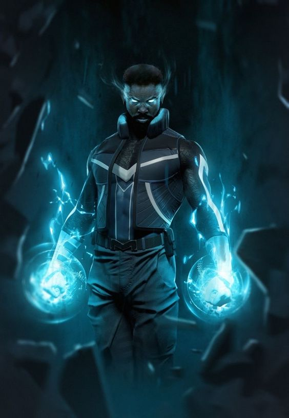

Fique Por Dentro de Tudo no Mundo Geek!
Título: Novo Filme do Universo Marvel Revela Detalhes Surpreendentes
No universo cinematográfico da Marvel, uma onda de excitação varreu os fãs de quadrinhos e cinéfilos após o último evento da Marvel Studios, onde foram revelados detalhes eletrizantes sobre o próximo filme do Universo Marvel. O diretor e o elenco não economizaram em compartilhar insights sobre a trama, novos personagens e reviravoltas inesperadas, deixando os aficionados ávidos por mais informações sobre o que promete ser um épico cinematográfico.
O evento, que atraiu uma multidão de fãs e a atenção da mídia global, começou com uma apresentação do diretor, que destacou a importância deste próximo capítulo no Universo Marvel e prometeu uma experiência que elevará os padrões do gênero de filmes de super-heróis.
Uma das revelações mais impactantes foi a introdução de novos personagens que prometem adicionar camadas adicionais à já rica tapeçaria do Universo Marvel. O elenco compartilhou insights sobre esses personagens, destacando suas motivações, habilidades e o papel crucial que desempenharão na trama. Os fãs estão especulando avidamente sobre como esses novos personagens se encaixarão no universo estabelecido e como suas interações com os heróis existentes influenciarão o destino do filme.
Além disso, detalhes sobre a trama foram revelados de forma meticulosa, deixando os fãs intrigados e ávidos por mais. Reviravoltas inesperadas foram insinuadas, prometendo uma história cheia de surpresas e emoções. Os espectadores estão ansiosos para ver como os eventos se desenrolarão e como seus heróis favoritos enfrentarão os desafios que se apresentam.
O evento também ofereceu aos fãs uma prévia exclusiva de cenas do filme, aumentando ainda mais a antecipação e o entusiasmo. As imagens mostraram sequências de ação espetaculares, efeitos visuais de tirar o fôlego e momentos emocionantes que certamente ficarão gravados na memória dos espectadores por muito tempo após o lançamento do filme.
Como era de se esperar, as redes sociais foram inundadas com reações entusiasmadas dos fãs, que compartilharam suas expectativas e teorias sobre o que está por vir. O hype em torno do filme só parece estar crescendo à medida que a data de lançamento se aproxima.